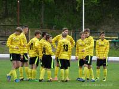

Pierwsze kroki:
Zacząłem grać w piłkę, gdy miałem zaledwie 9 lat. Moim pierwszym klubem był LUKS Orlik Nawiady, który z dumą reprezentowałem przez następne 3 lata. Następnie rozwój osobisty sprawił, iż dostałem się do drużyny o klasę lepszą - MKS Mrągowia Mrągowo, w której jak się później okazało moja "kariera" legła w gruzach. Jednakże zagrałem tam aż 8 sezonów stopniowo rozwijając swoje umiejętności piłkarskie. Niestety, gdy byłem bliski transferu to profesjonalnego klubu piłkarskiego zdarzył się wypadek, który definitywnie pozbawił mnie marzeń. Nie mogłem grać przez blisko rok, co ogromnie wpłynęło na moją grę. Po każdej operacji starałem się wracać i odbudowywać swą formę, jednak nie grałem już na takim pozomie, do jakiego przyzwyczaiłem trenerów i kolegów z drużyny, więc postanowiłem, w roku 2015, że zagram swój ostatni mecz w klubie. Było to dla mnie strasznie trudne, ponieważ poświęciłem temu ogrom czasu, zdrowia i serca ale takie jest życie. Często brakuję mi tej przedmeczowej adrenaliny, tyrania na treningach tylko po to, by być lepszym od przeciwnika i samego siebie sprzed dnia wcześniejszego, atmosfery jaka panowała w szatni i na boisku. Poznałem dzięki piłce wielu wspaniałych ludzi i za to jestem wdzięczny.
|
|
|

|
| Rodzina |
Profesjonalizm |
Wsparcie |

|
|
|
| Szczęscie |
Adrenalina |
Ból |
Osiągnięcia
| Wiek |
Osiągnięcie |
Nagroda |
| 10 |
Pierwszy tytuł króla strzelców |
Statuetka dla najlepszego strzelca |
| 11 |
Tytuł najlepszego obrońcy sezonu |
Nagroda pieniężna - 200 zł |
| 13 |
Transfer do nowego, lepszego klubu |
Możliwości rozwoju |
| 14 |
Pierwszy wygrany sezon |
Awans do ligi wojewódzkiej |
| 16 |
Pierwszy hat-trick w poważnych rozgrywkach |
Ogromna satysfakcja |